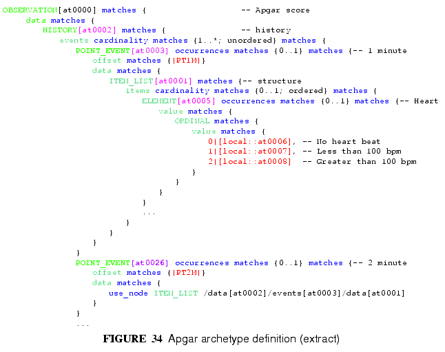
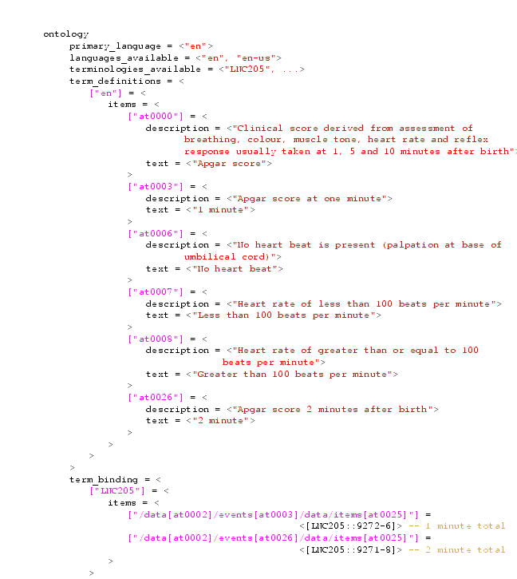
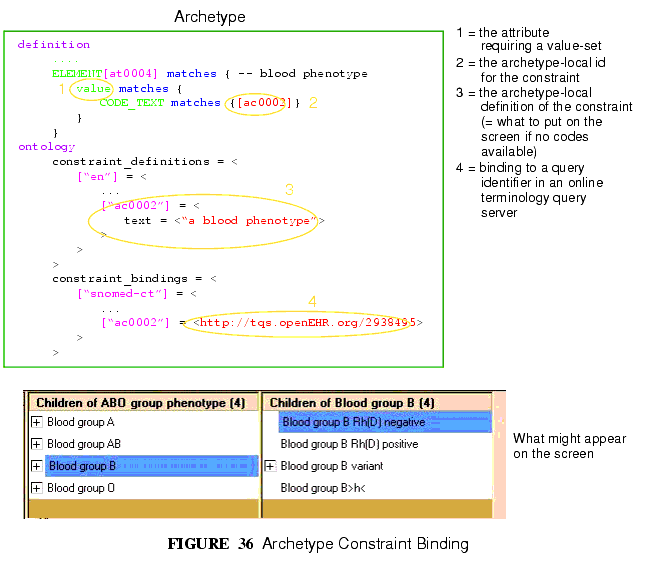

12 Terminology in openEHR
12.1 Overview
openEHR archetypes provide a powerful way to define the meaning of clinical and related data, and to connect, or "bind", data to recognised terminologies such as LOINC, ICDx, ICPC, SNOMED-CT and the many other terminologies and vocabularies used in healthcare. Terminology is used in openEHR in the following ways:
- The values of coded attributes in the reference model are defined by an "openEHR" terminology.
- Each archetype contains its own internal terminology, defining the meaning of each element.
- Bindings to external terminologies can be included in an archetype, allowing direct mappings to terms, or mappings to queries that return specific value sets.
- Querying the EHR using external terminologies is supported by archetype bindings.
The following sections describe these features.
12.2 Terminology to Support the Reference Model
openEHR has its own small terminology and code sets, which are used to provide the value sets of a number of attributes in the reference model. Code sets are used to express well-known internationally standardised lists of codes where the codes themselves have meaningful values e.g. the ISO 3166 country codes ("au", "cn", "pl" etc). Six such code sets are used by various attributes the reference model, each of type CODE_PHRASE (the openEHR type used to represent a term code).
For other coded attributes, such as PARTICIPATION.function in the reference model, the openEHR terminology takes the more orthodox route in terminology design, and defines value sets in groups using meaningless codes and rubrics. These attributes are always of type DV_CODED_TEXT; the code itself is contained within the defining_code attribute.
The openEHR terminology is described in the openEHR Terminology document1, with computable expressions available at the openEHR terminology page2.
12.3 Archetype Internal Terminology
Archetypes contain their own local terminology (found in the `ontology' section of an archetype). The use of internal term sets is appropriate when there is no structure to the terms (ie no relationships) and when synonyms are not important. Thus, the use is limited to small flat lists of terms. The advantages of the terms being internal to the archetype, apart from computational efficiency mentioned above, are:
- Queries can be based on archetypes alone and do not require interacting with a terminology server;
- Translation of the terms is made within an explicit thematic context (since every archetype is about a specific topic) and is therefore far more likely to be accurate;
- Many terms required in archetypes are not available even in very large terminologies;
- People can share data based on archetypes even if they do not share terminologies.
It is clear, however, that many archetypes require a connection to external terminologies to provide the full benefits of automatic processing; this is described in the next section.
The internal terminology takes the form of a set of {code, text, description} semantic definitions for each node of the archetype structure. Each such term is identified by an "at" (archetype term) code, e.g. [at0012]. Each code defined locally in an archetype is used for one of two purposes:
- either to semantically identify the data nodes of the archetype (i.e. to "name" the data), or
- to provide value-sets for leaf attributes.
For example, the local codes in an "Apgar result"3 archetype could contain terms for "1 minute event" and "2 minute event". These codes are associated with the reference model nodes within the `definition' part of the archetype. In the Apgar example, the two codes (say [at0003] and [at0026]) will be mapped to nodes of reference model type EVENT (rm.data_structures.history package), as shown in FIGURE 31. It is this mapping that is the basis for archetype paths: an archetype path is simply the alternating pattern of reference model attribute names and node codes.

The second use of local codes is as values. In FIGURE 31, the ELEMENT node identified by code [at0005] has as its value constraint an ORDINAL type whose values can be 0, 1, or 2. Each of these values is coded by the codes [at0006], [at0007], and [at0008]. An extract of the archetype ontology showing these terms is shown in FIGURE 32.

12.4 Binding to External Terminologies
Binding External Terminology Codes to Archetype Codes
The first kind of binding is the ability within an archetype to map an internal code to a code from an external terminology. The bindings are grouped on the basis of external terminology, allowing any given internal code in an archetype to be bound to codes in multiple terminologies. Usually, coverage provided by external terminologies is incomplete, and the mappings may be approximate, so care must be taken in creating the mappings in the first place. In the example shown in FIGURE 32, two paths are shown respectively as being bound to LOINC codes for 1-minute and 2-minute Apgar total. In this example, the whole path is bound, meaning that the mapping only holds between [at0025] and [LNC205::9272-6] when [at0025] occurs in the first path; when it occurs in the second path, the mapping is to a different LOINC code. This is how so-called "pre-coordinated" codes from external terminologies can be mapped to an openEHR archetype concept.
Bindings can also be made between atomic internal codes and external codes, in which case the meaning is that the mapping always holds, no matter how many times the internal code is used within the archetype.
Binding Terminology Value-sets to Archetypes
An important requirement with respect to terminology is that of specifying value sets for attributes defined in archetypes. Sometimes value sets are defined locally within the archetype, because the terms are not available in published terminologies, and in any case may be too hard to define therein, due to the lack of encapsulation. The terms "no effort", "moderate effort" and "crying" for example are recognised values for the "breathing" attribute of an Apgar result4. In the context of Apgar / breathing, the meanings are clear; clearly however a term with this rubric within a terminology like SNOMED-CT would need to be pre-coordinated. More importantly, there seems to be little business value in mapping a SNOMED term for "no effort", since a query for items containing "no effort" is unlikely to be useful in a clinical context.
For many other kinds of attributes however, terminologies are an appropriate source of values. Often such attributes define kinds of real world phenomena, such as kinds of disease and blood groups, rather than qualities of a phenomenon such as "no effort", or "blue". For these attributes a different kind of connection to external terminology is required. This is achieved in a similar way as for single code bindings: an internal code is defined, in this case an "ac" code ("ac" = archetype constraint), and this is bound to queries to one or more external terminologies, whose result would be a (possibly structured) value set from that terminology. The logical scheme is illustrated in FIGURE 33, where he attribute value to be coded is "blood group phenotype".

Currently there is no standard for such queries. This does not affect archetypes directly, since they simply hold an identifier for a query; the query itself is defined within a "terminology query server". The result of this query is a list of blood group phenotypes, which might appear as shown at the bottom of FIGURE 33.
12.5 Querying using External Terminologies
Querying through EHR data is frequently cited to be the major utility of terminology with respect to health information. With the mappings defined in archetypes, a number of approaches are possible, however the semantics of the intended query need to be understood first. Consider a query for "adenocarcinoma" on a patient record. SNOMED-CT includes 63 terms beginning with "adenocarcinoma" (and 171 terms which include the word as a secondary part of the phrase), some as children of a common parent. Nevertheless, the terms do not all have a single common parent; a choice has to be made of which terms correspond to the intent of the query. If it is to find any previous diagnosis of "adenocarcinoma", then at least the terms of the form "adenocarcinoma of lung", "... of liver" have to be included; somehow the status of "diagnosis" has to be specified in the query, ensuring that matches are not made with other uses of the same terms in the record, e.g. "fear of adenocarcinoma" or "minimal risk of adenocarcinoma". SNOMED-CT does not include a purely term-based way to make such distinctions, so the results of such a query applied in a simplistic fashion would then have to be sorted by a human.
Under the openEHR aproach, path-based querying can be used to specify (for example) "EVALUATIONs based on a problem-diagnosis-histological_staging archetype" with a value at the path /data/items[at0002.1.1]/value/code equal-to-or-subsumed-by [snomed-ct::35917007] (the code for "adenocarcinoma"). This now reduces the result set to diagnoses for the patient (not a family member) of adenocarcinoma of some kind, rather than simply "any use of the term [snomed-ct::35917007] in the record". In a similar way, archetype path-based querying can be used to distinguish the other potential ambiguities described in section 6.4 on page 29.
2http://svn.openehr.org/specification/TRUNK/publishing/architecture/computable/terminology/terminology.html
3Apgar is a basic measure of health of a newborn, taken 2 or 3 times after delivery, in the form of a 0-10 score.
|
openEHR Foundation http://www.openEHR.org |